누수탐지·누수공사
첨단 장비로 벽·바닥 속 숨은 누수 지점을 정확히 찾아 최소 파손으로 잡습니다.
누수부터 막힘, 교체, 설비까지. 상황에 맞는 전문 시공을 제공합니다.
첨단 장비로 벽·바닥 속 숨은 누수 지점을 정확히 찾아 최소 파손으로 잡습니다.
역류하는 하수구, 내려가지 않는 변기·싱크대. 원인을 찾아 확실하게 뚫습니다.
노후 수전·변기·세면대 교체와 부속품 수리를 깔끔하게 마감합니다.
노후 배관 교체·설비 시공과 고압세척, 관로 내시경 진단을 제공합니다.
전화 한 통이면 됩니다. 비용은 언제나 시공 전에 먼저 안내합니다.
증상을 말씀해 주시면 현장 상황을 파악하고 예상 비용을 안내합니다.
가까운 기술자가 약속된 시간에 현장으로 출동합니다.
장비로 원인을 정확히 진단하고 확정 견적을 안내합니다.
동의 후 시공하고 마감·재발 여부까지 확인합니다.
실제 현장 사진과 후기는 신뢰의 핵심입니다. 아래 이미지는 실제 시공 사진으로 교체해 사용하세요.
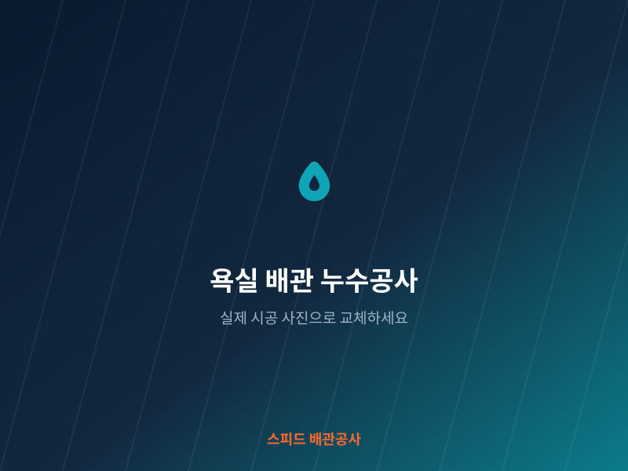
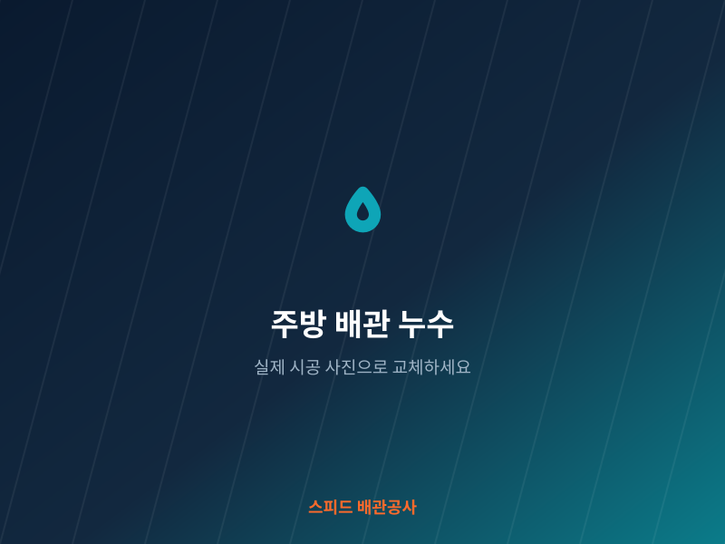
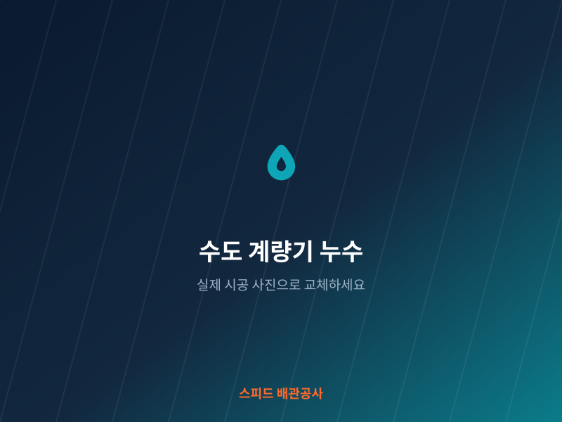
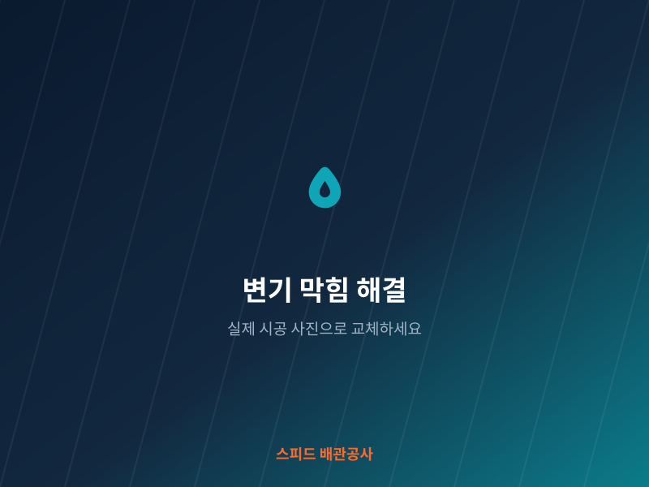
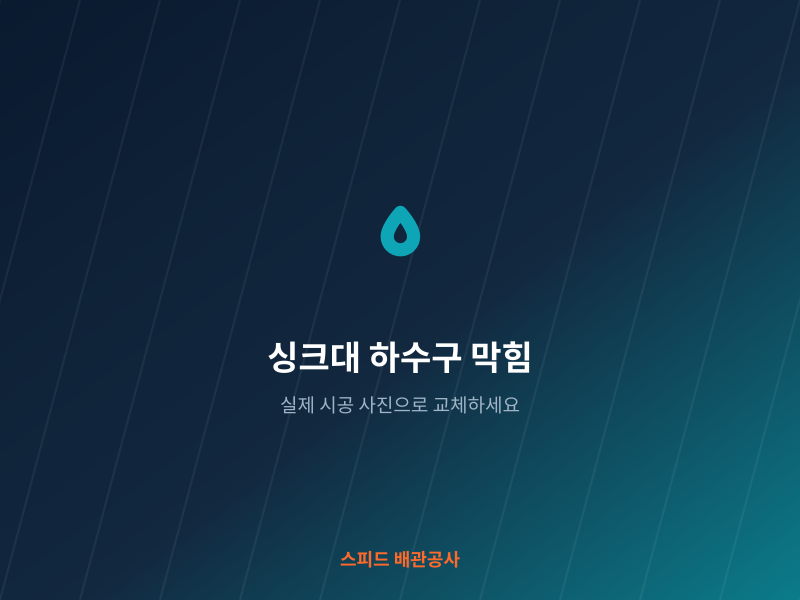
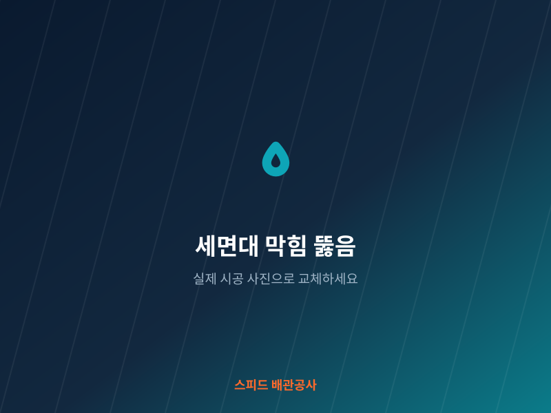
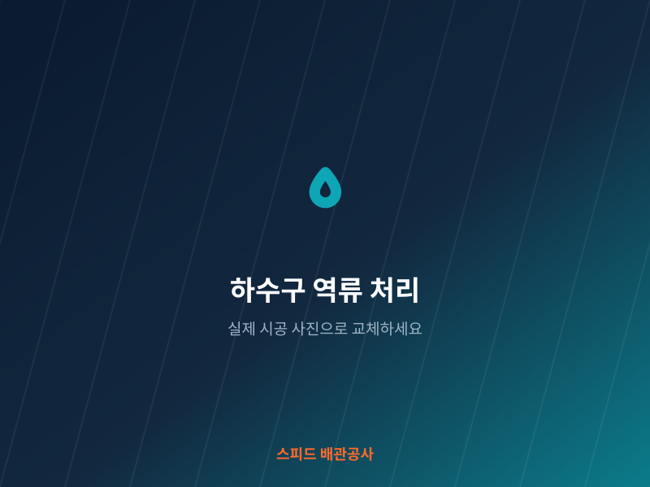
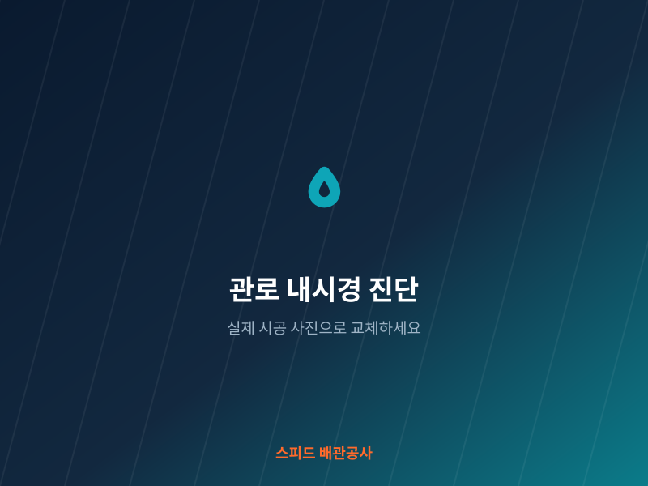
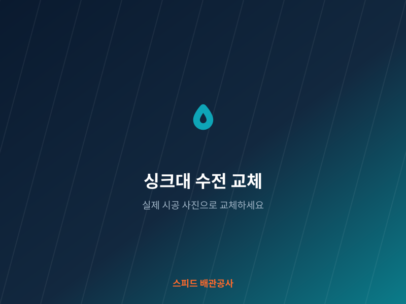
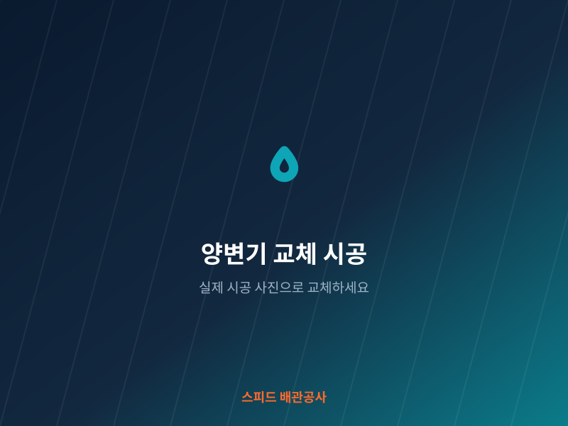
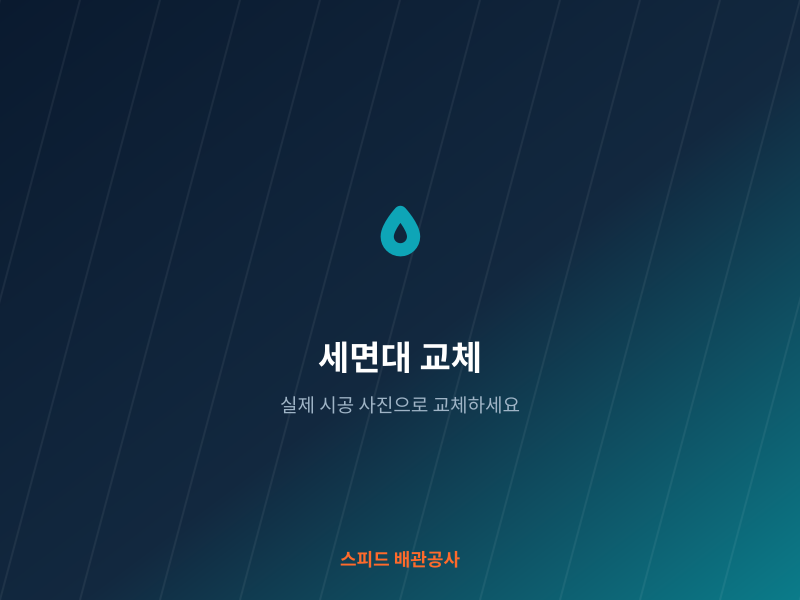
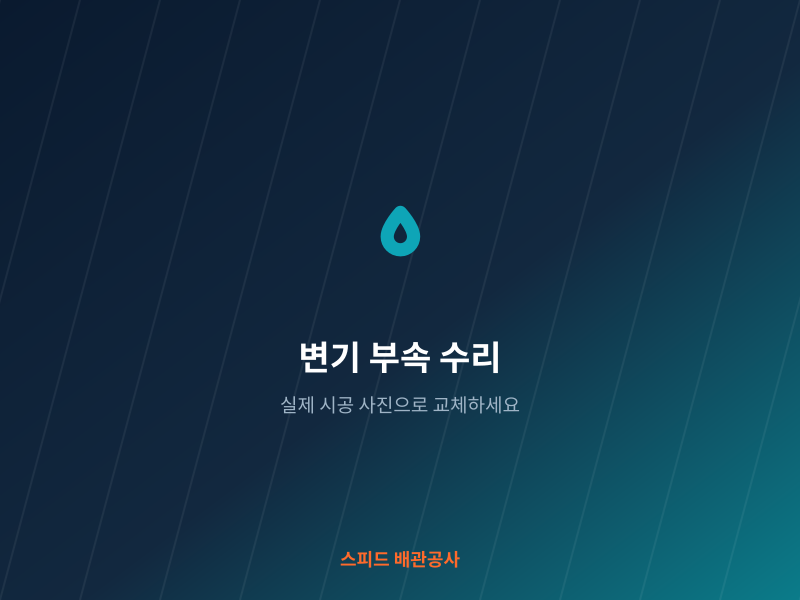
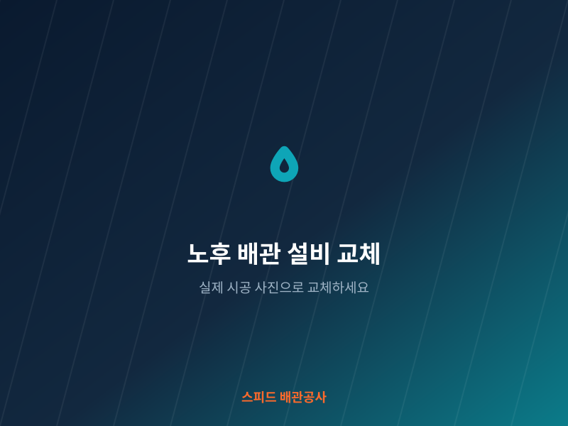
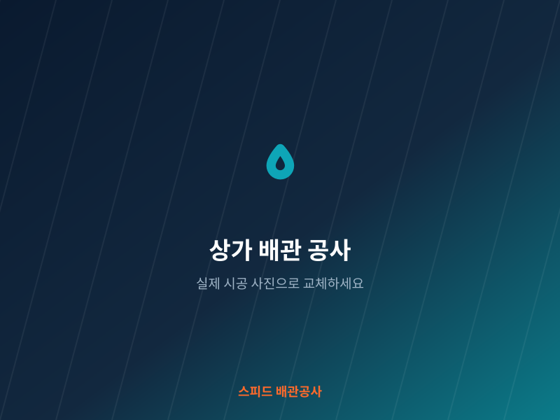
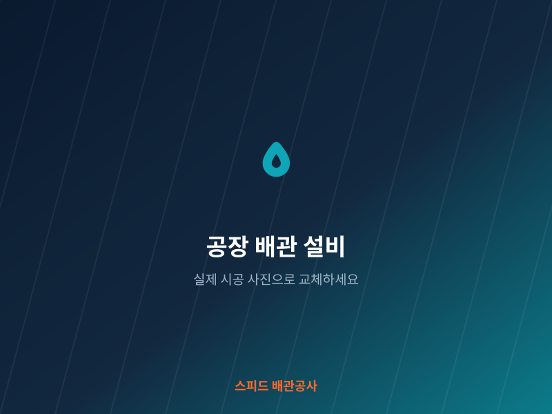
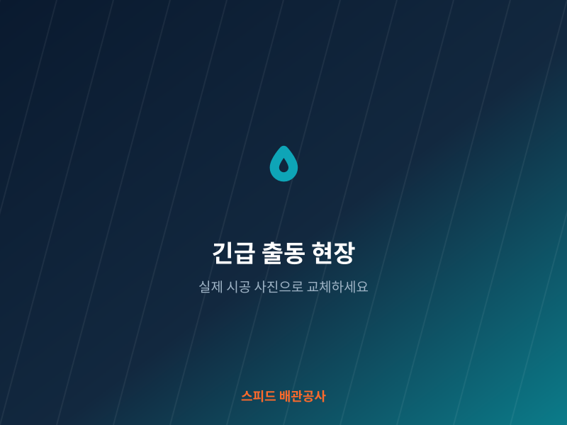
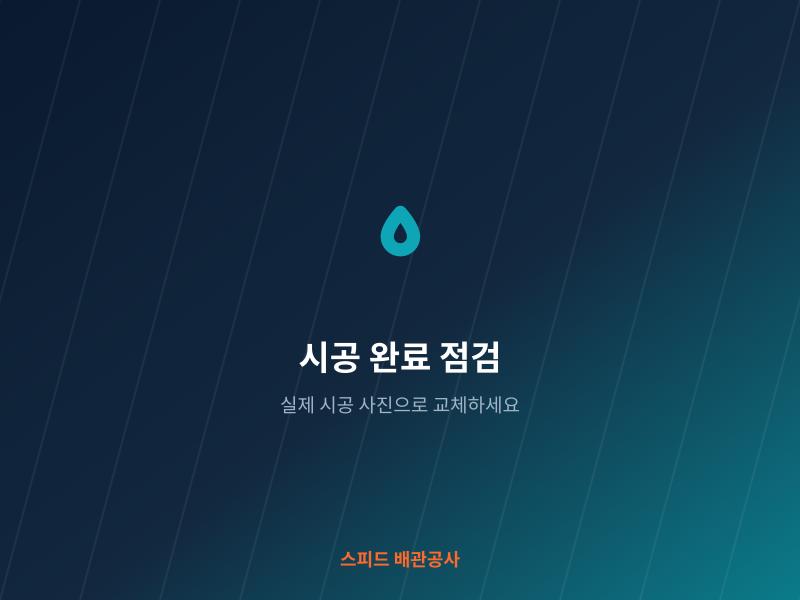
현장 상황·자재·난이도에 따라 비용이 달라집니다. 아래 표는 예시이며, 실제 금액은 진단 후 확정 견적으로 안내드립니다.
| 서비스 | 내용 | 비용 |
|---|---|---|
| 누수탐지 | 벽·바닥 비파괴 탐지 | 현장 견적 |
| 하수구·변기 막힘 뚫음 | 스프링/고압세척 | 현장 견적 |
| 싱크대·세면대 수전 교체 | 자재 별도 | 현장 견적 |
| 양변기 교체 | 철거·설치 포함 | 현장 견적 |
| 고압세척·관로 내시경 | 관 길이·상태별 | 현장 견적 |
※ 위 금액은 예시입니다. 방문·진단 후 확정 견적을 드리며, 동의 없이 추가 비용이 발생하지 않습니다. 정확한 가격은 1668-0000로 문의해 주세요.
대표: 홍길동 · 상호: 스피드 배관공사 · 정식 사업자 등록 업체
2015년부터 축적한 시공 경험으로 대표가 직접 현장을 책임집니다. 하도급이 아닌 자사 기술자가 시공합니다.
검증된 정품 부속만 사용하며, 시공 후 마감 점검과 재발 시 A/S 안내까지 책임집니다.
사업자등록(000-00-00000) 정식 업체로, 시공 전 확정 견적을 문서로 안내해 불필요한 추가 비용을 방지합니다.
증상과 지역을 말씀해 주시면 전화로 예상 비용을 안내드립니다. 방문 진단 후 확정 견적을 드리며, 동의 없이 추가 비용이 발생하지 않습니다.
네. 청음식·가스식 누수탐지 장비로 벽이나 바닥 속 누수 지점을 비파괴 방식으로 찾아 손상을 최소화합니다.
관로 내시경으로 막힘 원인을 확인한 뒤 고압세척 등으로 근본 원인을 제거해 재발을 줄입니다. 구조적 문제는 개선 방법을 함께 안내합니다.
서울·경기·부산 등 전국 17개 광역시·도 전역과 시·군·구, 읍·면·동 단위까지 서비스를 제공합니다. 지역별 안내 페이지에서 우리 동네를 확인하실 수 있습니다.
연중무휴 24시간 상담·출동을 운영합니다. 긴급 상황은 언제든 전화 주세요.